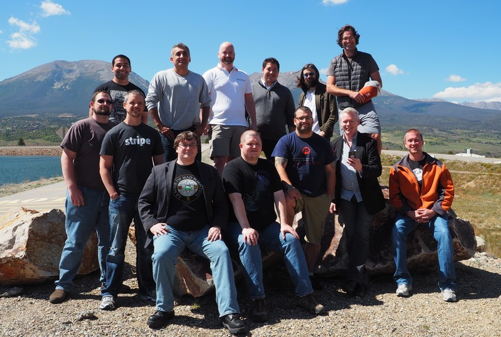

Matt Bruzek is a software engineer, a security researcher, conferences presenter and Linux enthusiast with over 20 years of experience in the software industry.
Matt has worked as a software engineer at Metaphase, IBM, Canonical (the people behind Ubuntu Linux), and Red Hat writing beautiful code and making software products better.
With a scholarship from Cray Research, Matt earned a Bachelor of Science degree in Computers Science from the University of Minnesota in Duluth Minnesota.
* The biography was written in third person so I can reuse it for talks and publications. I do not normally talk like this but it would be hilarious if I did.
Matt has given talks to different technical groups and presentations at international conferences.
When not working you can find Matt at the local makerspace the Rabbit Hole creating software and artisinal woodware projects.
Matt had the opportunity to work with some really good and smart people over the years. We worked under tight deadlines, long hours and in far flung places. I like to think we are all better, stronger and smarter from the shared struggle.
Would like to thank this rag tag band of short change heroes:

How you like me now? ... Jorge !